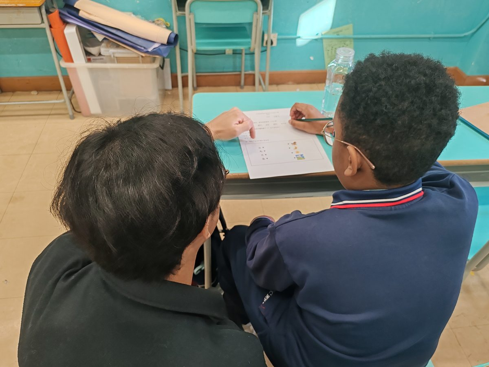
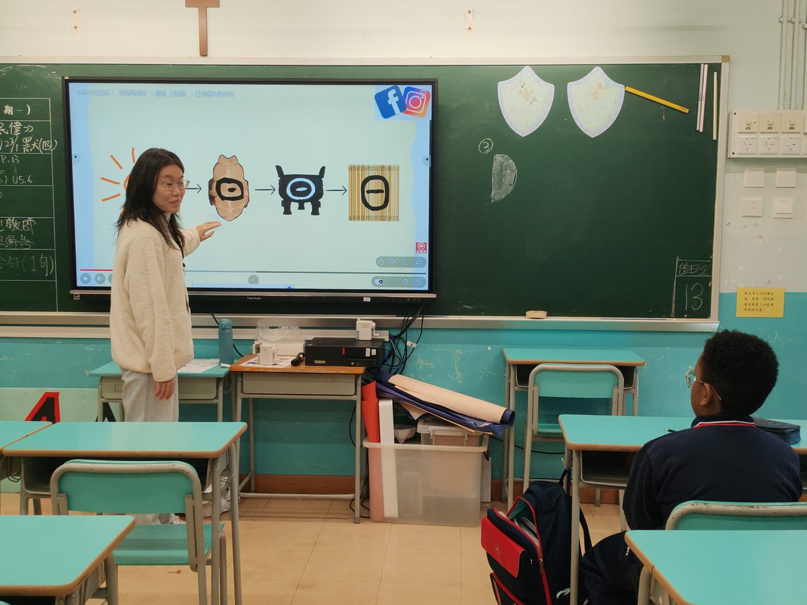
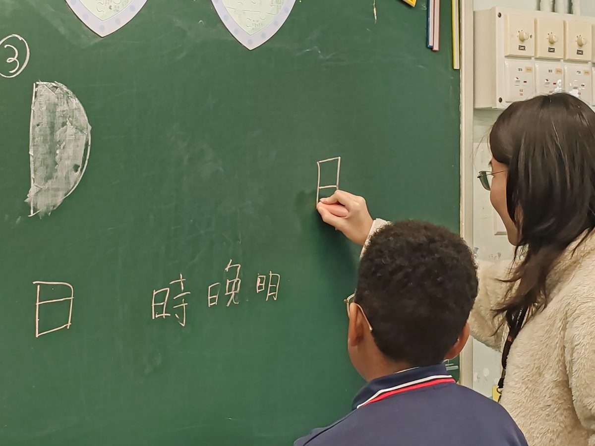
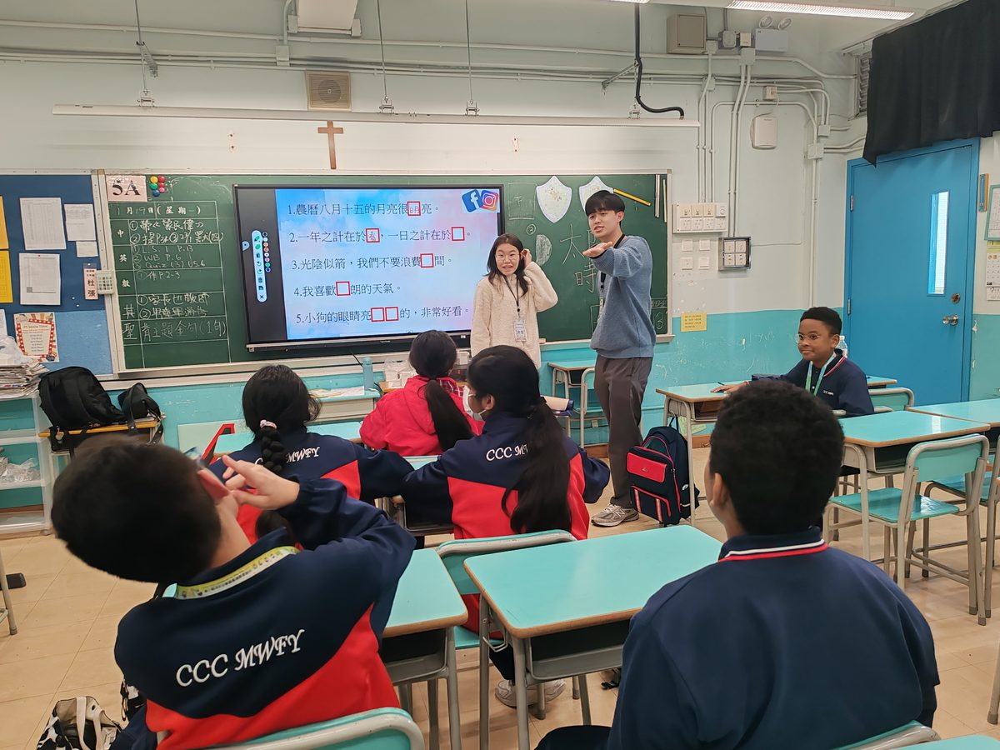
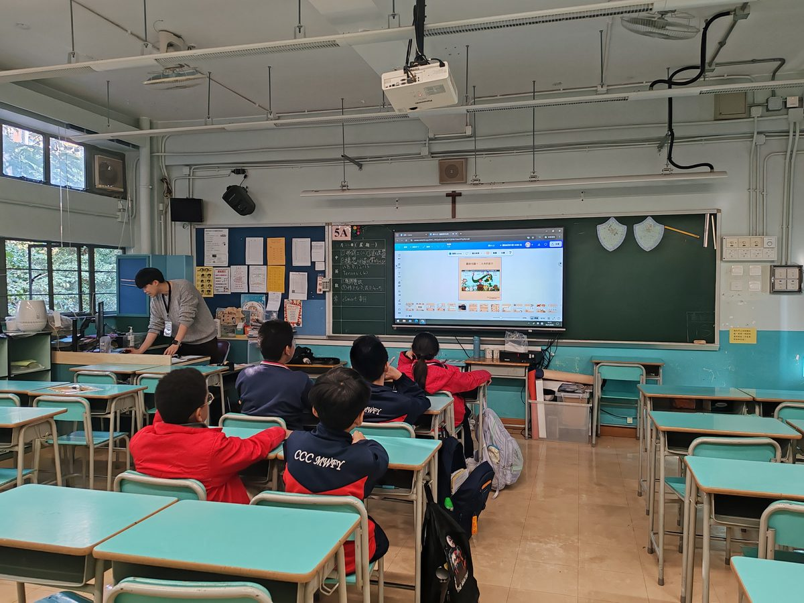
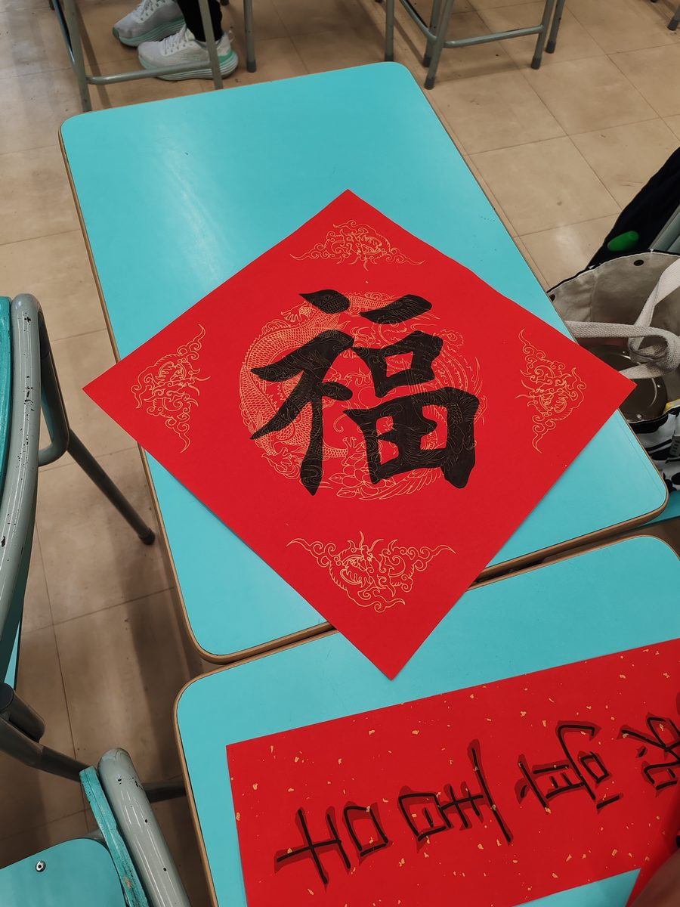
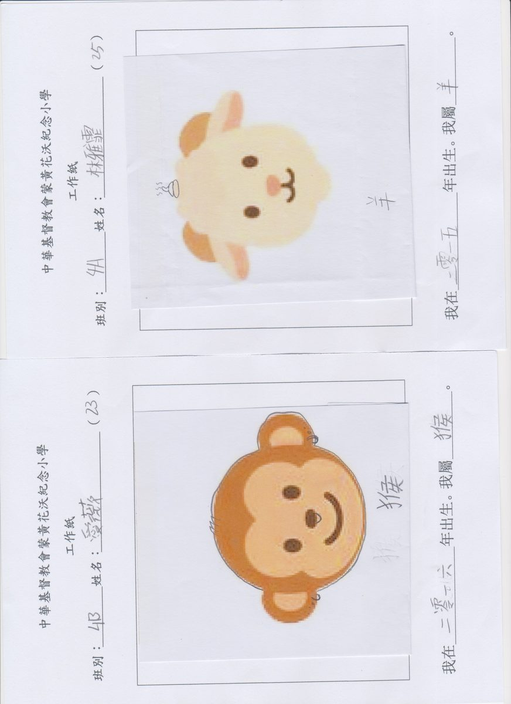
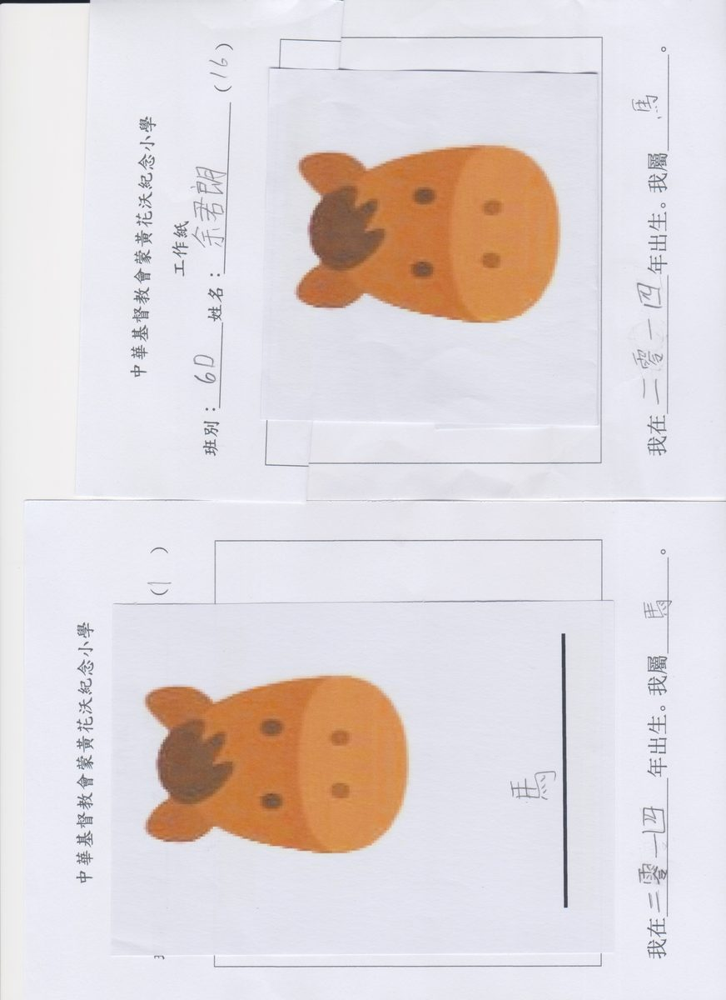

📅
服務期
2027 年 1 月至 2 月底
以中史動畫為基礎
2026–27 年度 ｜ 服務期：2027 年 1 月至 2 月底
以動畫為媒介，讓非華語學生輕鬆學中文與中國歷史
香港教育大學 · The Education University of Hong Kong
《非華語生學中文》是香港教育大學一門服務學習通識課程（GEM1047）。 教大學生先在課堂學習非華語中文教學理念及背景，再分組到合作學校， 以中史動畫輔助教學，協助非華語學生學習中文、歷史及詞語。
教學內容圍繞《看動畫・學歷史》、學詞語、玩遊戲，並可按校本需要調適， 讓大學生實踐「學以致用、服務社群」，同時為非華語學生帶來更具趣味的學習體驗。
上年度準教師走進本地中小學前線服務；以下為曾獲報道的合作學校，新一年度歡迎更多學校加入。
每所合作學校可選出優秀非華語學生，頒發「2026 最佳非華語中文之星」獎狀。
香港教育大學準教師修讀「非華語生學中文：以中史動畫為基礎」課程後， 走進中華基督教會蒙黃花沃紀念小學、德蘭中學及嶺南鍾榮光博士紀念中學等校， 運用動畫資源協助非華語學生跨越語言與文化障礙，結合主題教學及國民教育，展現以學生為本的教學實踐。
於蒙黃花沃紀念小學，準教師透過前測與一對一輔導了解學習起點，並以中秋、農曆新年、十二生肖、揮春等單元提升識字、書寫與口語表達； 對比前後測，學生字形筆劃見明顯進步。服務結束後，該校鄭家寶校長亦到教大分享校本中華文化教育經驗。
閱讀信報原文 →上年度服務學習課堂紀錄（影片已內嵌於本站，無需外連）。
GEM1047 課堂／服務學習活動片段（約 14 分鐘）
以下相片來自上年度課堂與學生作品，已存放於本站，不依賴外連。








學生們對「糖黐豆」和「大電視」遊戲印象最深，課後仍會討論。她們對「日」字部的字掌握得比預期好。
教授非華語學生中文的關鍵，在於去障礙、建鷹架、連生活。中史動畫與多元教學活動的結合，能有效打破語言與文化的壁壘。在德蘭中學的六節課中，我見證了學生從對「年獸」一無所知，到能自信地說出「團圓」、「平安」等祝福語；從對漢字部件感到困惑，到能主動參與「糖黐豆」的部首組合遊戲。
從前我對非華語教學的認知多停留於「字詞翻譯」與「逐字帶讀」；課程讓我明白，漢字對他們而言如同一幅幅圖畫，多模態輸入與文化回應教學，才能真正降低門檻、建立共融課堂。
若貴校希望引入動畫教學支援非華語學生的中文學習，歡迎成為 GEM1047 服務學習合作夥伴。費用全免，教案可按校本調適。